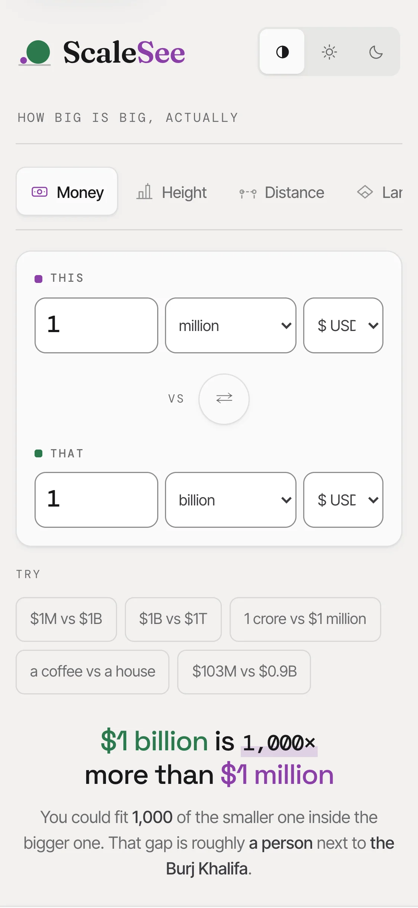
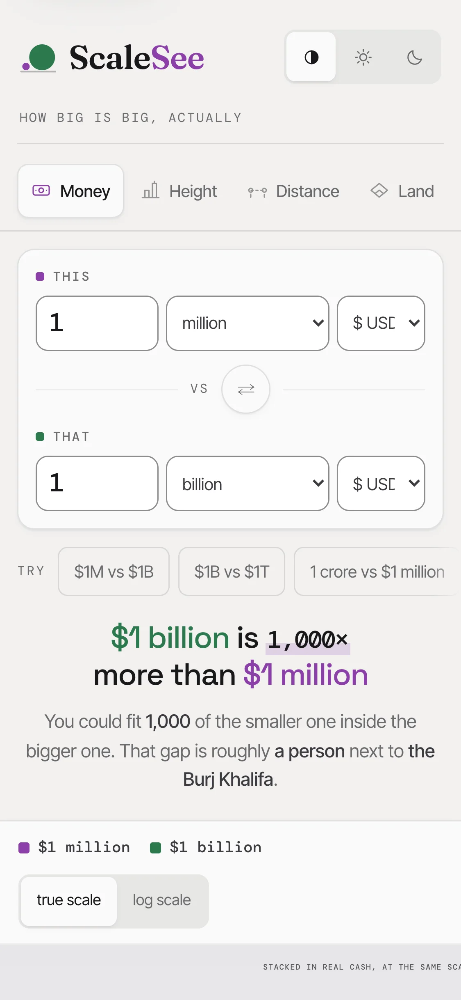

Before and after, on an 812 px tall phone
Before: card at 810 px

After: card at 666 px

The dashed line marks where the card that holds the drawing begins. What changed:
Both screens are the same page and the same pair, captured from the version before the fix and the version after it.